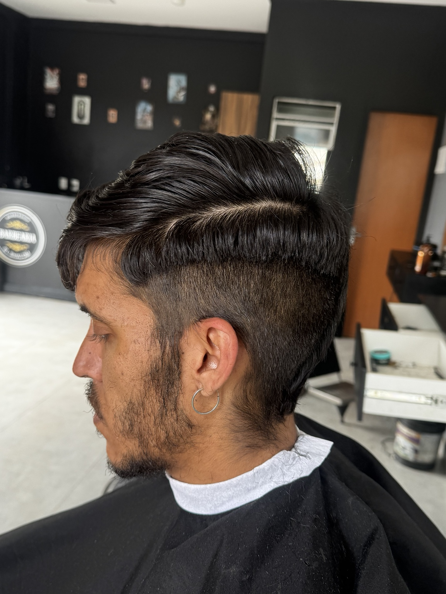
Etapa 01
Preparação da base
Comece observando a estrutura do corte.
Preparação da base
Comece observando a estrutura do corte.
Método profissional e prático para você aprender o degradê de forma rápida, segura e do jeito certo.
Agora as fotos que você enviou entram como uma sequência visual. Use as setas, toque nos lados ou arraste com o dedo para navegar; as próximas etapas ficam suavemente desfocadas até você avançar.

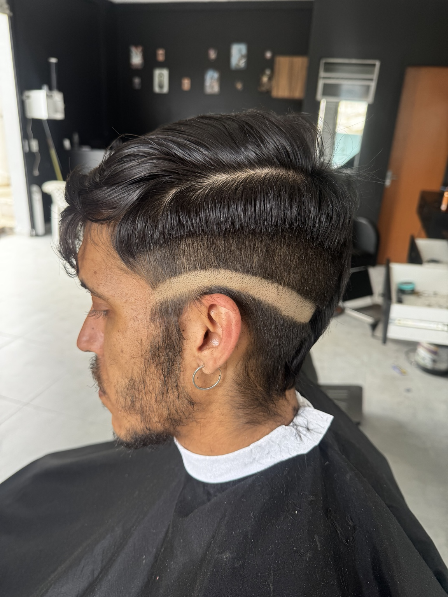
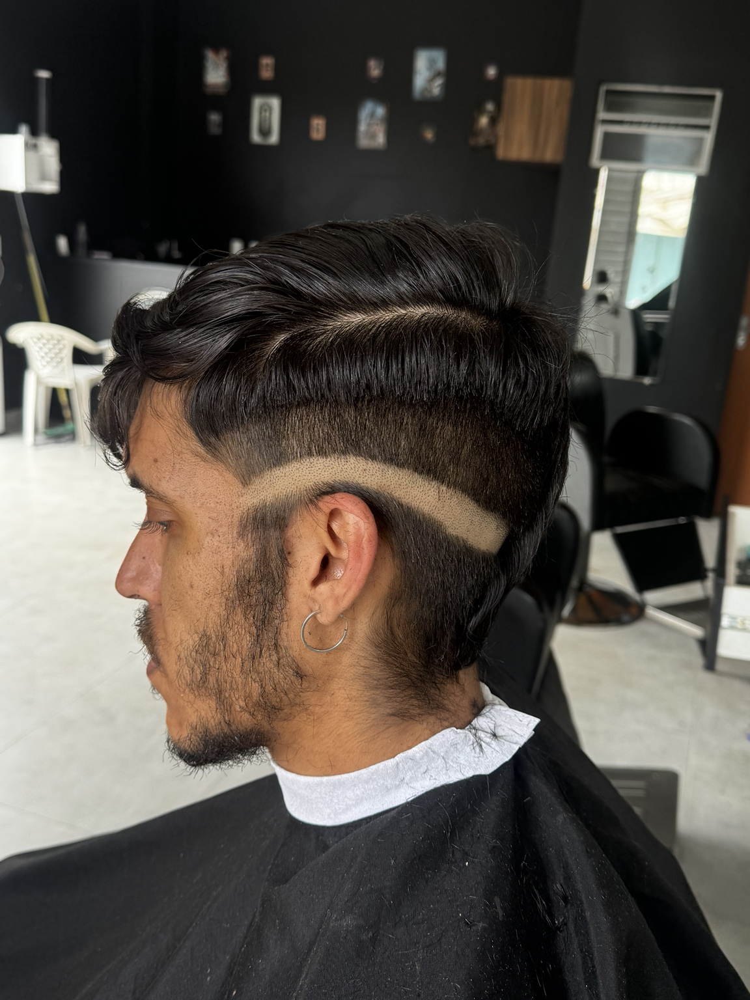
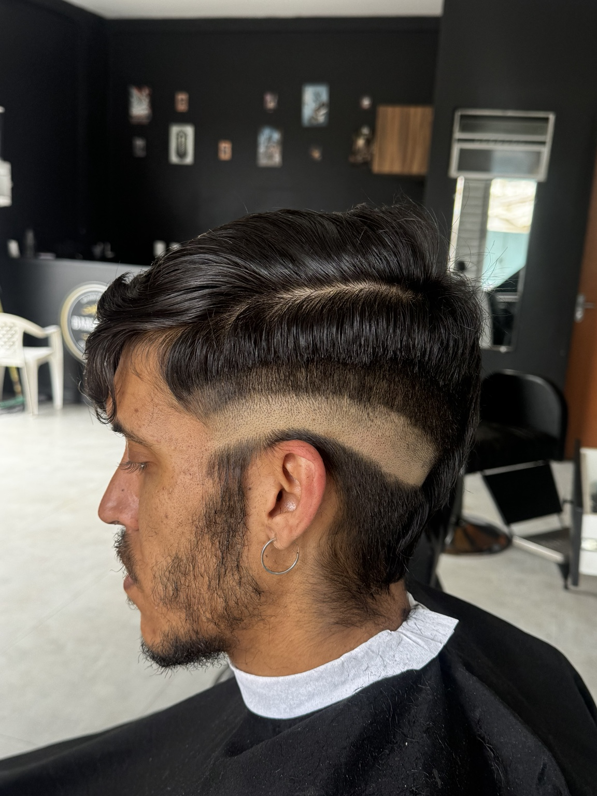
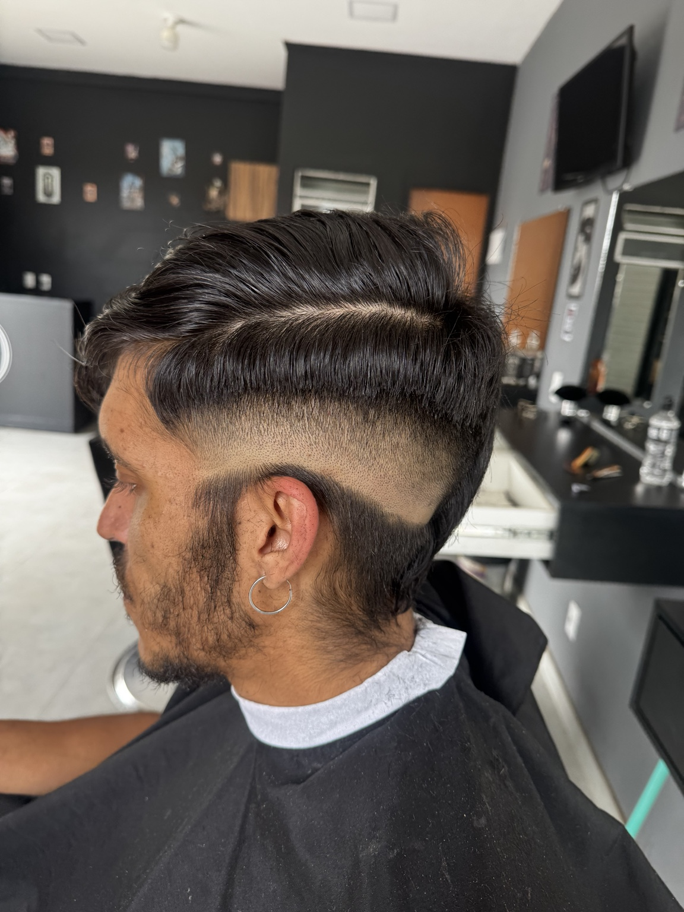
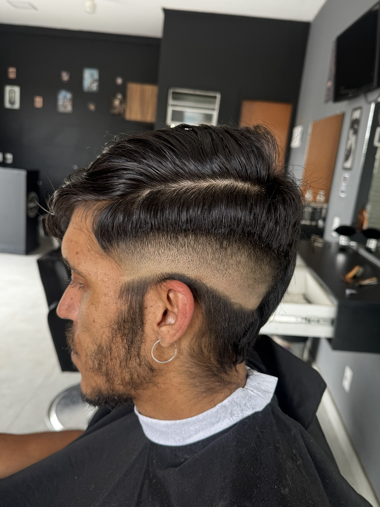
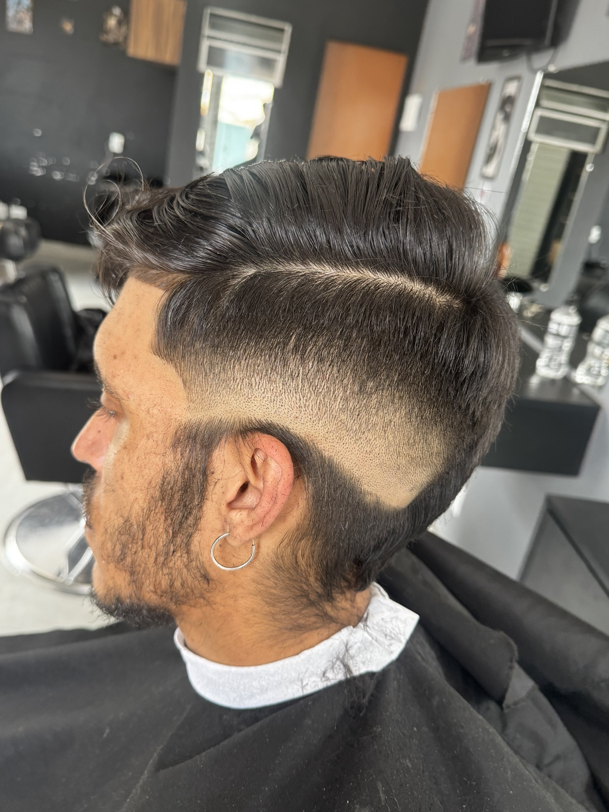
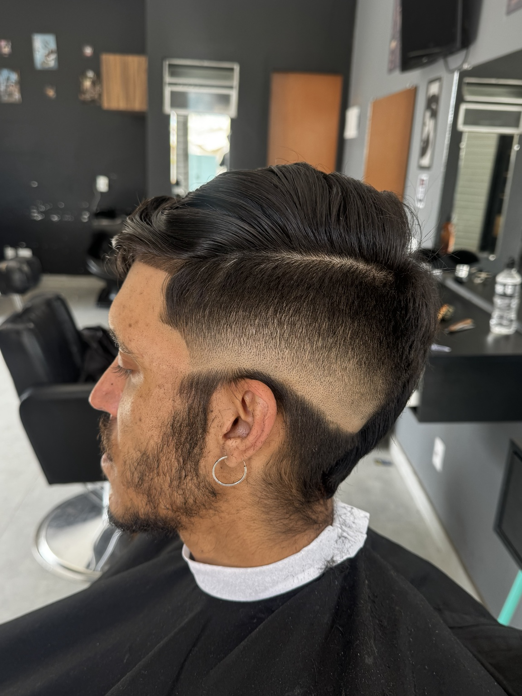
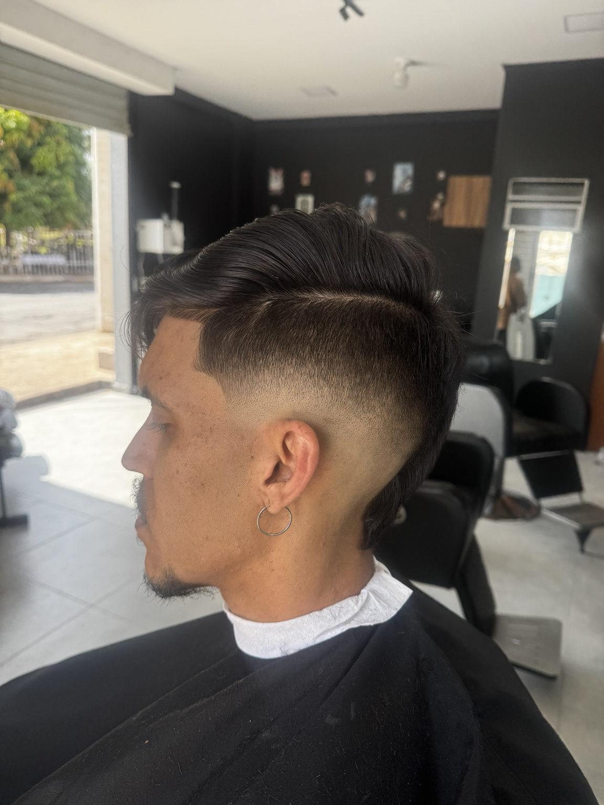
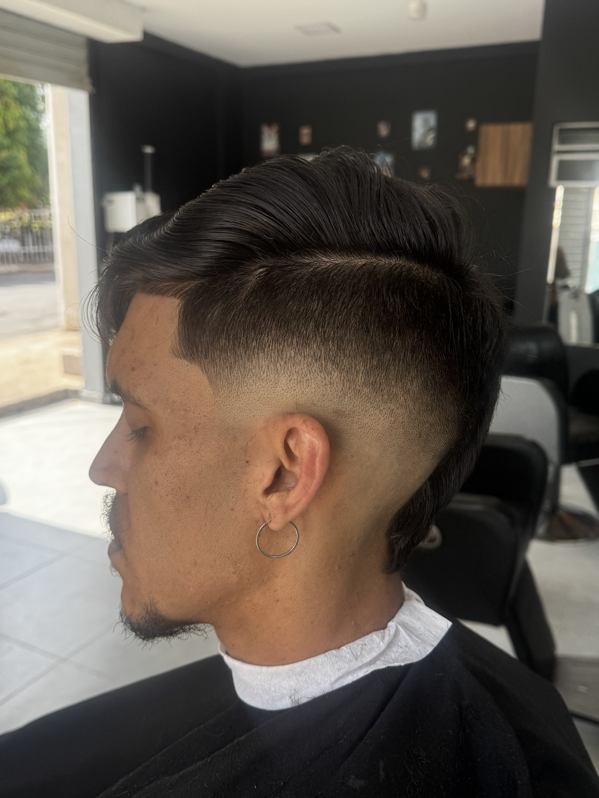
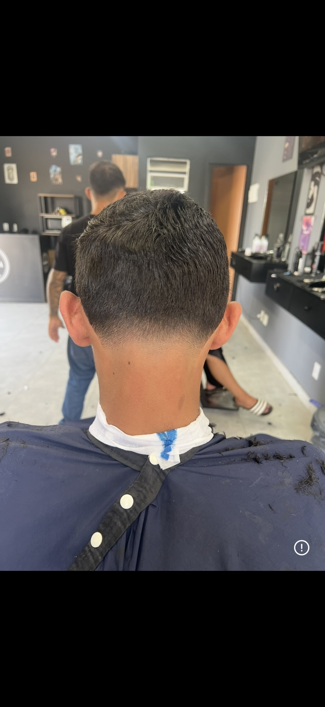
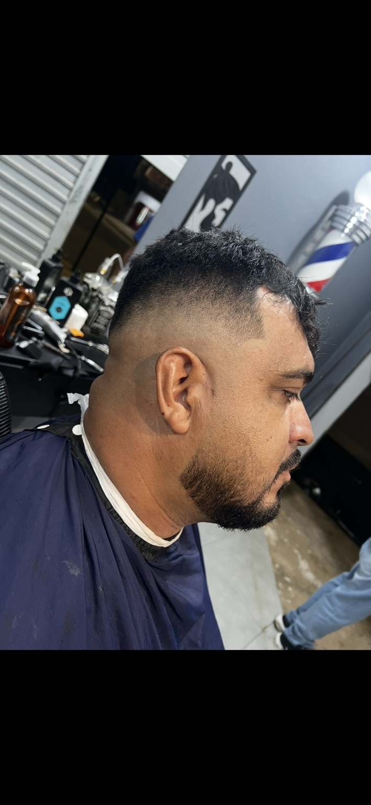
Organize as etapas para saber o que fazer primeiro e por quê.
Conteúdo visual e objetivo para acompanhar o processo com mais facilidade.
Aprenda a observar detalhes que mudam a percepção final do corte.
Use as setas ou arraste com o dedo. O próximo corte aparece desfocado ao lado e ganha destaque quando você navega.
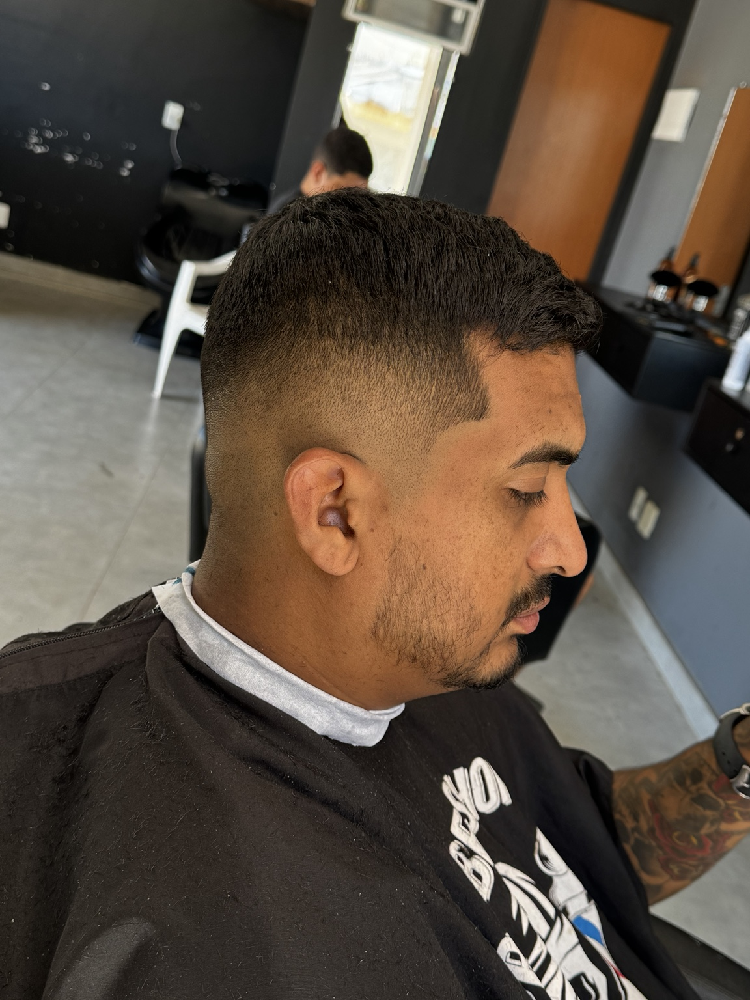


Os vídeos que você enviou ficam reunidos aqui para deixar a página mais dinâmica e mostrar o processo de forma real.
Veja um antes e depois e tenha uma referência visual da transformação.
Mostre seu trabalho, entenda o processo e transforme prática em confiança para atender seus clientes.
Quero aprender o métodoÁrea preparada para receber depoimentos reais dos seus alunos. Os cartões abaixo são espaços de conteúdo e não devem ser publicados como avaliações reais sem substituir pelos depoimentos autorizados.
Coloque aqui a mensagem de um aluno real, com autorização para publicação.
Você pode usar print, nome e foto do aluno, caso tenha autorização.
Assim a seção fica verdadeira e pronta para converter com provas reais.
Treinamento online para iniciantes que querem sair da teoria e começar a praticar com uma sequência mais clara.
Sim. O treinamento é online e o acesso é feito pela plataforma de entrega do curso.
Sim. O método foi apresentado como um treinamento para quem está começando.
Depois da confirmação da compra, a Kiwify orienta o comprador sobre o acesso e envia instruções por e-mail.
Sim, conforme a oferta desta página, o aluno recebe certificado de conclusão ao finalizar o curso.
Use o botão do WhatsApp no canto da tela para entrar em contato com o suporte.